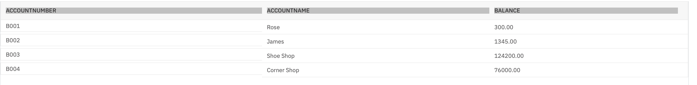
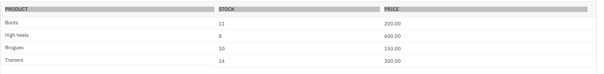
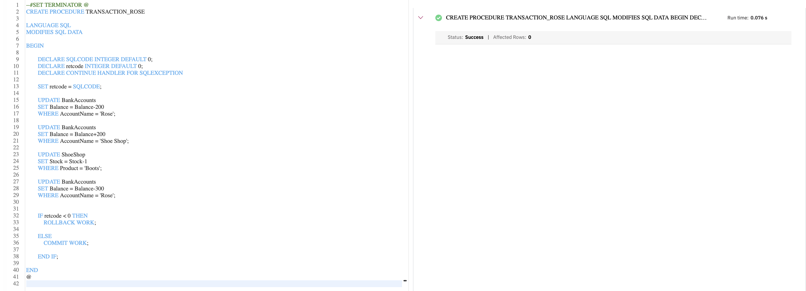
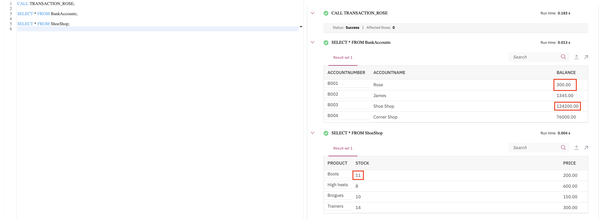

Estimated time needed: 10 minutes
A transaction is simply a sequence of operations performed using one or more SQL statements as a single logical unit of work. A database transaction must be ACID (Atomic, Consistent, Isolated and Durable). The effects of all the SQL statements in a transaction can either be applied to the database using the COMMIT command or undone from the database using the ROLLBACK command.
In this lab, you will learn some commonly used TCL (Transaction Control Language) commands of SQL through the creation of a stored procedure routine. You will learn about COMMIT, which is used to permanently save the changes done in the transactions in a table, and about ROLLBACK, which is used to undo the transactions that have not been saved in a table. ROLLBACK can only be used to undo the changes in the current unit of work.
In this lab, you will use an IBM Db2 Database. Db2 is a Relational Database Management System (RDBMS) from IBM, designed to store, analyze and retrieve data efficiently.
To complete this lab you will utilize a Db2 database service on IBM Cloud. If you did not already complete this lab task earlier in this module, you will not yet have access to Db2 on IBM Cloud, and you will need to follow the lab below first:
The data used in this lab is internal data. You will be working on the BankAccounts and ShoeShop tables.


This lab requires you to have the BankAccounts and ShoeShop tables populated with sample data on Db2. Download the BankAccounts-CREATE.sql and ShoeShop-CREATE.sqlscripts below, upload them to the Db2 console and run them. The scripts will create new tables called BankAccounts and ShoeShop while dropping any previous BankAccounts and ShoeShop tables if they exist, and will populate them with the sample data required for this lab.
Please go through the lab below to learn how to upload and run a script on Db2 console (for this case, you need don't need to know anything else other than how to upload and run a script):
After completing this lab, you will be able to:
When you approach the exercises in this lab, follow the instructions to run the queries on Db2:
Go to the Resource List of IBM Cloud by logging in where you can find the Db2 service instance that you created in a previous lab under Services section. Click on the Db2-xx service. Next, open the Db2 Console by clicking on Open Console button. Click on the 3-bar menu icon in the top left corner and go to the Run SQL page. The Run SQL tool enables you to run SQL statements.
Let us go through an example on committing and rolling back a transaction
Make sure you have created and populated the BankAccounts and ShoeShop tables by following the "Data Used in this Lab" section of this lab.
--#SET TERMINATOR @
CREATE PROCEDURE TRANSACTION_ROSE -- Name of this stored procedure routine
LANGUAGE SQL -- Language used in this routine
MODIFIES SQL DATA -- This routine will only write/modify data in the table
BEGIN
DECLARE SQLCODE INTEGER DEFAULT 0; -- Host variable SQLCODE declared and assigned 0
DECLARE retcode INTEGER DEFAULT 0; -- Local variable retcode with declared and assigned 0
DECLARE CONTINUE HANDLER FOR SQLEXCEPTION -- Handler tell the routine what to do when an error or warning occurs
SET retcode = SQLCODE; -- Value of SQLCODE assigned to local variable retcode
UPDATE BankAccounts
SET Balance = Balance-200
WHERE AccountName = 'Rose';
UPDATE BankAccounts
SET Balance = Balance+200
WHERE AccountName = 'Shoe Shop';
UPDATE ShoeShop
SET Stock = Stock-1
WHERE Product = 'Boots';
UPDATE BankAccounts
SET Balance = Balance-300
WHERE AccountName = 'Rose';
IF retcode < 0 THEN -- SQLCODE returns negative value for error, zero for success, positive value for warning
ROLLBACK WORK;
ELSE
COMMIT WORK;
END IF;
END
@ -- Routine termination character

Let's now check if the transaction can successfully be committed or not. Copy the code below in a new blank script and paste it to the textbox of the Run SQL page. Click Run all.
CALL TRANSACTION_ROSE; -- Caller query
SELECT * FROM BankAccounts;
SELECT * FROM ShoeShop;
We can observe that the transaction has been executed. But when we observe the tables, no changes have permanently been saved through COMMIT. All the possible changes happened might have been undone through ROLLBACK since the whole transaction fails due to the failure of a SQL statement or more. Let's go through the possible reason behind the failure of the transaction and how COMMIT - ROLLBACK works on a stored procedure:
The first three UPDATEs should run successfully. Both the balance of Rose and ShoeShop should have been updated in the BankAccounts table. The current balance of Rose should stand at 300 - 200 (price of a pair of Boots) = 100. The current balance of ShoeShop should stand at 124200 + 200 = 124400. The stock of Boots should also be updated in the ShoeShop table after the successful purchase for Rose, 11 - 1 = 10.
The last UPDATE statement tries to buy Rose a pair of Trainers, but her balance becomes insufficient (Current balance of Rose: 100 < Price of Trainers: 300) after buying a pair of Boots. So, the last UPDATE statement fails. Since the whole transaction fails if any of the SQL statements fail, the transaction won't be committed.
The SQLCODE which is a stand-alone host variable contains success/failure/warning information of each SQL statement execution. Now since SQLCODE variable gets reset back as the next SQL statement runs, retcode is our local variable to catch the return value of this SQLCODE. SQLCODE returns negative value for each SQL statement if not executed successfully. So, on any error occurrence, all the changes are rolled back. Commit only takes place after the transaction gets executed successfully without any error.

Now let's practice an exercise on committing and rolling back a transaction.
Problem:
Create a stored procedure TRANSACTION_JAMES to execute a transaction based on the following scenario: First buy James 4 pairs of Trainers from ShoeShop. Update his balance as well as the balance of ShoeShop. Also, update the stock of Trainers at ShoeShop. Then attempt to buy James a pair of Brogues from ShoeShop. If any of the UPDATE statements fail, the whole transaction fails. You will roll back the transaction. Commit the transaction only if the whole transaction is successful.
Use the previous code from Task A Step 2 and modify it. Take 1200 (4 x 300) from James's balance and add 1200 to the ShoeShop balance. Take 4 trainers out of the stock in ShoeShop. Then take 150 from James's balance.
--#SET TERMINATOR @
CREATE PROCEDURE TRANSACTION_JAMES -- Name of this stored procedure routine
LANGUAGE SQL -- Language used in this routine
MODIFIES SQL DATA -- This routine will only write/modify data in the table
BEGIN
DECLARE SQLCODE INTEGER DEFAULT 0; -- Host variable SQLCODE declared and assigned 0
DECLARE retcode INTEGER DEFAULT 0; -- Local variable retcode with declared and assigned 0
DECLARE CONTINUE HANDLER FOR SQLEXCEPTION -- Handler tell the routine what to do when an error or warning occurs
SET retcode = SQLCODE; -- Value of SQLCODE assigned to local variable retcode
UPDATE BankAccounts
SET Balance = Balance-1200
WHERE AccountName = 'James';
UPDATE BankAccounts
SET Balance = Balance+1200
WHERE AccountName = 'Shoe Shop';
UPDATE ShoeShop
SET Stock = Stock-4
WHERE Product = 'Trainers';
UPDATE BankAccounts
SET Balance = Balance-150
WHERE AccountName = 'James';
IF retcode < 0 THEN -- SQLCODE returns negative value for error, zero for success, positive value for warning
ROLLBACK WORK;
ELSE
COMMIT WORK;
END IF;
END
@ -- Routine termination character
| Date | Version | Changed by | Change Description |
|---|---|---|---|
| 2020-12-24 | 1.1 | Steve Ryan | ID Reviewed |
| 2020-12-20 | 1.0 | Sandip Saha Joy | Created initial version |